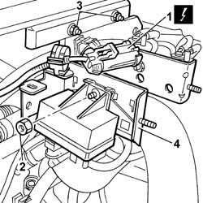
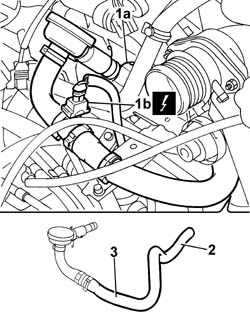
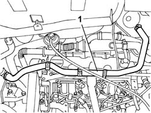
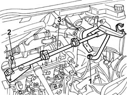
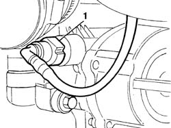
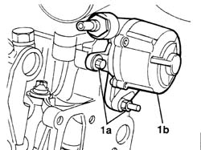
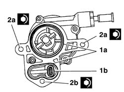
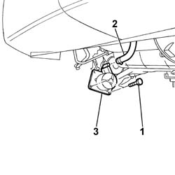

3330D30 VACUUM PUMP - R+R
- Path
- Procedures > 33 BRAKING SYSTEM > 3330 HYDRAULIC BRAKING SYSTEM > 3330D BRAKE VACUUM SYSTEM > 3330D30 VACUUM PUMP - R+R
- Kind
- repair procedure (removal / refitting; the operation number is the code)
- Applies to
- engines: 2.0 JTD 8V, 2.3 JTD 16V, 2.8 JTD 8V; all production periods
- Interactive page
- https://sloeber94.github.io/elrnDB-fDct/en/#/244001112
Applies to: engines: 2.0 JTD 8V; all production periods
 Removing
Removing
 Refitting
RefittingOp. 7055B54 UNDER-ENGINE GUARD - R R
See in Op. 1048A21
See in Op. 1048A50
Op. 1048B16 PIPES AND/OR ELBOW BETWEEN TURBOCHARGER AND THROTTLE CASING - R.R.
Op. 1048B12 RIGID PIPE CARRYING AIR BETWEEN TURBOCHARGER AND INLET MANIFOLD - R+R
See in Op. 1080C17
1. Disconnect the electrical connection for the heater plugs control unit.
 | Description | Connector |
|---|---|---|
1 | Heater plugs control unit | M015C |
2. Undo the nut fixing the heater plugs control unit.
3. Undo the nuts fixing the bracket to the partition.
4. Move the bracket complete with solenoid valves and heater plugs control unit to the side.

Applies to: engines: 2.0 JTD 8V; all production periods
1. Press the retaining spring (1a) and disconnect the electrical connection (1b) for the engine oil vapour pipe.
| Description | Connector |
|---|---|---|
1b | Oil vapour heating resistance | O007A |
2. Disconnect the engine oil vapour pipe from the air intake pipe between the filter and the turbocharger.
3. Remove the oil vapour pipe.

Applies to: engines: 2.0 JTD 8V; all production periods
1. Open the bands and release the heater coolant pipe.

Applies to: engines: 2.0 JTD 8V; all production periods
1. Disconnect the recirculation pipe from the thermostat.
2. Undo the fixing bolts at the ends of the rigid pipe.
- Disconnect the coolant reservoir recirculation pipe from the rigid pipe.
3. Remove the rigid pipe from the housing.

Applies to: engines: 2.0 JTD 8V; all production periods
1. Disconnect the vacuum pipe from the brake servo.

Applies to: engines: 2.0 JTD 8V; all production periods
1. Undo the fixing bolts (1a) and remove the vacuum unit (1b) from the housing in the cylinder head.

Applies to: engines: 2.0 JTD 8V; all production periods
Refitting
Removing1. Lubricate and, if necessary, replace the seals (1a) and the oil filter (1b).
2. Fit the vacuum unit and tighten the bolts (2a) and the nut (2b) to the recommended torque.
 | Value - daNm | Fastening | Component | Ø |
|---|---|---|---|---|
2a | 4,3 | Bolt | BRAKING SYSTEM BRAKES | - |
| Value - daNm | Fastening | Component | Ø |
|---|---|---|---|---|
2b | 4,3 | Nut | BRAKING SYSTEM BRAKES | - |

Applies to: engines: 2.0 JTD 8V; all production periods
- Connect the vacuum pipe to the brake servo.
- Fit the rigid pipe in the housing on the cylinder head.
- Connect the coolant reservoir recirculation pipe to the rigid pipe and tighten the fixing bolts.
- Connect the recirculation pipe to the thermostat.
- Position the heater coolant pipe.
- Connect the electrical connection for the engine oil vapour pipe.
| Description | Connector |
|---|---|---|
. | Oil vapour heating resistance | O007A |
- Connect the engine oil vapour pipe to the air intake pipe between the filter and the turbocharger and to the tappet cover.
- Fit the bracket complete with solenoid valves and heater plugs control unit.
- Tighten the nut fixing the heater plugs control unit.
- Connect the electrical connection for the heater plugs control unit.
| Description | Connector |
|---|---|---|
. | Heater plugs control unit | M015C |
See in Op. 1080C17
Op. 1048B12 RIGID PIPE CARRYING AIR BETWEEN TURBOCHARGER AND INLET MANIFOLD - R+R
Op. 1048B16 PIPES AND/OR ELBOW BETWEEN TURBOCHARGER AND THROTTLE CASING - R.R.
See in Op. 1048A50
See in Op. 1048A21
Applies to: engines: 2.8 JTD 8V; all production periods
See in Op. 1020D14
Applies to: engines: 2.8 JTD 8V; all production periods
Removing
RefittingOp. 7055B54 UNDER-ENGINE GUARD - R R
1. Undo the fixing bolts.
2. Open the band and disconnect the pipe from the vacuum unit.
3. Remove the vacuum unit from the lower part of the engine compartment.

Applies to: engines: 2.8 JTD 8V; all production periods
Refitting
Removing- Fit the vacuum unit and tighten the fixing bolts.
- Connect the vacuum pipe to the vacuum unit.
Topics linked from this page (3)
- 1048B12 RIGID PIPE CARRYING AIR BETWEEN TURBOCHARGER AND INLET MANIFOLD - R+R
- 1048B16 PIPES AND/OR ELBOW BETWEEN TURBOCHARGER AND THROTTLE CASING - R.R.
- 7055B54 UNDER-ENGINE GUARD - R R